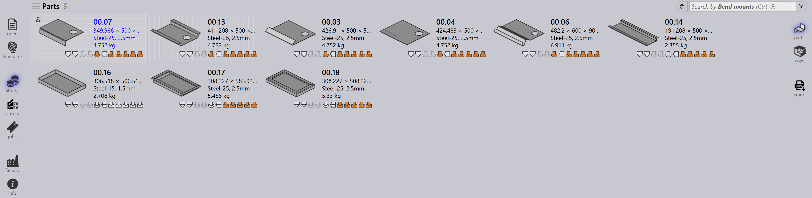

Alkatrészek
Az TruSmartCAM Alkatrész Könyvtára központi munkaterületként szolgál, ahol az összes importált alkatrész interaktív csempeként jelenik meg. Lehetővé teszi a felhasználók számára az alkatrész részleteinek gyors megtekintését, a szerszámozási állapot ellenőrzését a gépek között, valamint műveletek végrehajtását, mint például keresés, navigálás vagy alkatrész-specifikus információk megnyitása.
Az alkatrészek importálásával kapcsolatos információkért lásd: Alkatrészek importálása.
-
Használja a P gyorsbillentyűt a könyvtár menüpontra való navigáláshoz.

-
A Könyvtár nézet az összes importált alkatrészt csempeként jeleníti meg.
-
Minden csempe a következőket mutatja:
-
Alkatrész kép.
-
Alapvető alkatrész tulajdonságok — név, méret, anyag, vastagság stb.
-
Szerszámozási állapot az elérhető gyári gépekhez.
-
-
A nézet automatikusan frissül az élő adatokkal. A frissítést bármikor kényszerítheti a F5 lenyomásával.
-
Az alkatrészek kereshetők Alkatrész-Név vagy Anyag alapján a Keresés mező használatával:
-
Kattintson a keresőmezőbe vagy nyomja meg a Ctrl+F billentyűt.
-
írja be a keresendő szöveget, az TruSmartCAM élőben frissíti a listát.
-
Nyomja meg az Esc billentyűt a keresési szöveg visszaállításához.
-
Alkatrész részletek oldal
-
Egy csempe dupla kattintással vagy az Enter lenyomásával egy csempe kijelölése után a nézet átvált a részletekre.
-
Kattintson bármelyik alkatrészre a gép útvonalának megtekintéséhez. Egy gép kiválasztása az útvonalon belül megnyitja a gép panelt, ahol áttekintheti és módosíthatja a szerszámozást.
-
Emellett a jobb oldali részletek oldal szerszámozási paramétereket és információkat jelenít meg a használt gépekről.